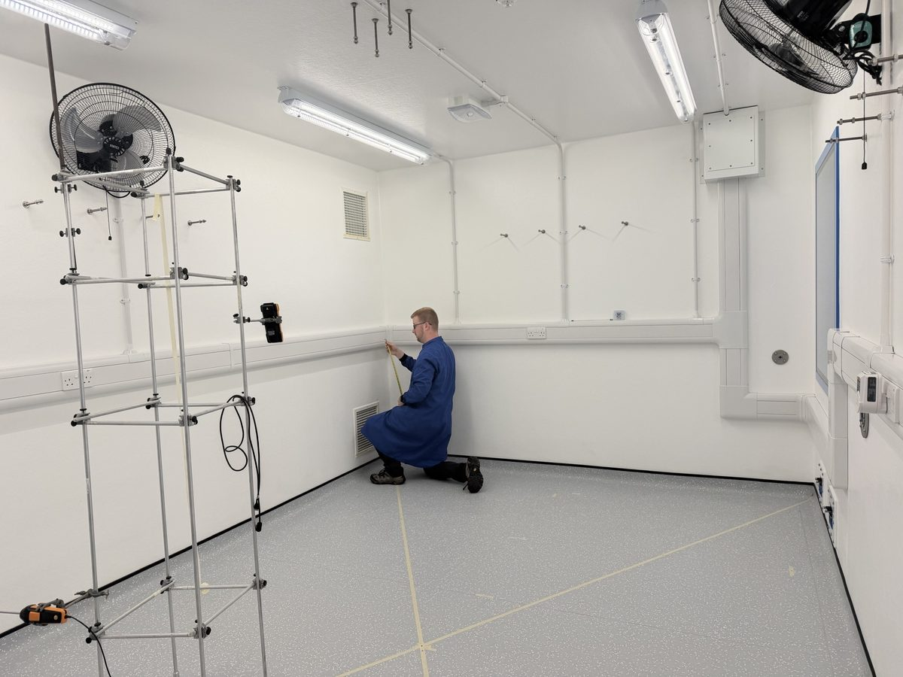

The air inside a hospital ward, a classroom, or an office is shaped by decisions engineers make: how a building is ventilated, how people move through it, how warm it is, and how it trades fresh air against the energy needed to provide it. Our research turns those decisions into evidence, so that buildings can protect the people inside them without costing the earth.

Why It Matters
Indoor air sits at the centre of two of the defining challenges of our time. The COVID-19 pandemic made it impossible to ignore that respiratory infections spread through the air we share indoors. Yet airborne transmission did not begin, or end, with COVID-19. Tuberculosis, measles, influenza, norovirus, and healthcare-associated infections all travel through indoor environments, and the buildings we occupy are our first line of defence.
At the same time, the drive to net zero is pushing buildings to become more airtight and energy-efficient, which can work directly against the ventilation that keeps air healthy. The central question of our field is how to resolve that tension: how to deliver air that is both safe to breathe and low in carbon. Answering it takes measurement most groups cannot make, modelling most groups cannot run, and a close partnership between building physics, microbiology, and data science.
What We Do
Airborne infection and bioaerosols
We study how infectious particles are generated, carried on air currents, and inhaled or deposited onto surfaces, and how ventilation, airflow, air cleaning (HEPA filtration and 254 nm / 222 nm far-UVC germicidal irradiation), and human behaviour change the risk. Our work underpins infection-prevention guidance for hospitals and has shaped national and international understanding of how respiratory disease spreads indoors.
Prof. Cath Noakes OBE FREng (Professor of Environmental Engineering for Buildings, CECAM Chamber Lead, and recipient of the 2026 Pettenkofer Award at Indoor Air 2026), Dr Marco-Felipe King (Lecturer in Building Engineering and Infection Transmission; Director of WPE), Dr Louise Fletcher (Lecturer in Environmental Engineering), and Dr Waseem Hiwar (Research Fellow in Airborne Infection Control) lead research spanning airflow and infection risk, the microbiology of the built environment, and quantitative microbial risk assessment (QMRA) in real healthcare settings, including how patients, healthcare workers, and surfaces exchange microorganisms across a working hospital ward.
Detecting and measuring bioaerosols
You cannot manage what you cannot measure, and airborne microorganisms are notoriously difficult to capture without damaging them. Dr Mark Tarn, Lecturer in Bioaerosol Science, brings bioaerosol detection down to the single-particle scale, using lab-on-a-chip microfluidics, droplet-freezing assays, and ice-nucleation science drawn from atmospheric research. Combined with our chamber and laboratory measurements, this allows us to characterise what is in the air across scales, from an individual droplet to a whole room.
Building physics, ventilation and net zero
Healthy air is delivered by the physics of the building around it. Prof. Simon Rees (Professor of Building Energy Systems) and Dr Sally Shahzad (Associate Professor in Architectural Engineering) lead research on building energy systems, ventilation, thermal comfort, and the low-carbon technologies, from geothermal heating and cooling to personal comfort systems and advanced building simulation, that determine whether a healthy building can also be a sustainable one.
Air-quality monitoring, schools and environmental justice
Real buildings are not laboratories, and the air in them changes by the minute. Dr Douglas Booker (Lecturer in Indoor Air Quality) and Dr Amirul Khan (Associate Professor in Environmental Fluid Mechanics; Deputy Director of WPE) work on real-world air-quality monitoring and the data science that makes sense of it, deploying low-cost sensor networks and applying machine learning to turn continuous measurement into insight people can act on. Through the landmark Class-ACT trial across 30 Bradford primary schools and the HESTIA network on UK housing retrofit, our work examines how indoor air quality inequalities affect children and households.
A Thread Through Everything: Data-Driven Modelling
Increasingly, we do not just measure indoor air: we assimilate live measurements into physics-based models to reconstruct what the air is doing in real time. Dr Marco-Felipe King and Dr Amirul Khan develop real-time data assimilation, GPU-accelerated Lattice-Boltzmann solvers, and physics-informed machine learning that fuse sensor data with computational fluid dynamics, recovering a physically meaningful picture of airflow and exposure in an occupied room with quantified uncertainty. This connects directly to our group's wider strength in Data-Driven & Computational Methods.
Facilities
Our research is anchored by CECAM (Chamber for Environmental Control of Airborne Microorganisms), our EPSRC-funded (EP/W006375/1) 5 × 3.2 × 2.5 m Class II microbiological containment walk-in chamber led by Prof. Cath Noakes OBE. Equipped with programmable HVAC, HEPA filtration, two heated thermal manikins (DINbots) that reproduce the buoyant plume of a human body, an Andersen six-stage impactor, an Automated Moving Platform Aerosol Sampler (AMPAS), a Plair Rapid-E+ real-time bioaerosol detector, and a three-dimensional lattice of airspeed, CO₂, and microclimate sensors, CECAM enables repeatable, fully instrumented experiments on airflow, bioaerosol transport, and air-cleaning interventions under realistic room conditions.
This is complemented by our dedicated Class II microbiological and clean molecular biology laboratories for culturing and sequencing airborne microorganisms, and by high-performance computing for large-scale airflow simulation. Explore our facilities in detail.
Impact and Partnerships
Our research has anchored some of the UK's most significant work on indoor air and health. HECOIRA, an EPSRC Healthcare Impact Partnership led from Leeds with NHS trusts and industry partners, developed computational tools to assess, monitor, and control hospital environments for infection prevention and patient wellbeing. During the COVID-19 pandemic, Prof. Cath Noakes chaired the UK Government SAGE Environment and Modelling Group (EMG), and the team helped shape national and global guidance through PROTECT (the UK National Core Study on transmission and environment), TRACK, AIRBODS, and Class-ACT.
Much of this work sits within the Healthy Buildings Network Leeds and connects closely to the Leeds Institute for Fluid Dynamics (LIFD) and the EPSRC Centre for Doctoral Training in Future Fluid Dynamics.
Read our COVID-19 ventilation impact case study · Explore HECOIRA
Study With Us
Indoor Air is one of our most active doctoral research areas, spanning building physics, environmental microbiology, fluid dynamics, and data science. We welcome prospective PhD students from engineering, physical sciences, environmental science, microbiology, and data science, including through the EPSRC Centre for Doctoral Training in Future Fluid Dynamics.
Work With Us
If you design, operate, or regulate buildings, manufacture ventilation or air-cleaning technologies, or want to evaluate indoor air quality in healthcare, educational, or commercial spaces, we would like to hear from you.
Contact the group · C.J.Noakes@leeds.ac.uk (CECAM Chamber) · m.f.king@leeds.ac.uk